There is a collection of photographs. Each photograph can have multipleanimals, e.g., cats, dogs and birds. Your model should indicate all the animals which are present.
From appropriate weather data, your model must predict, averagetemperature and average humidity for next seven days.
Predicting expected price of a second hand car with appropriate features.
None of these.
Q3MCQ2 marks
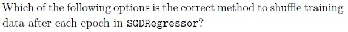
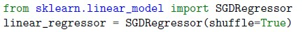
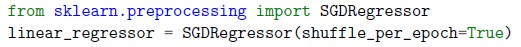
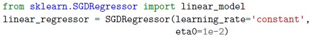
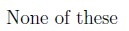
Q4MCQ2 marks
Which of the following can be used (with appropriate supporting code) to compute training error after each iteration?
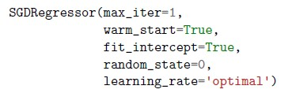
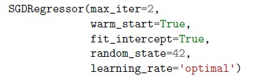
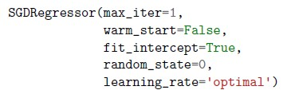
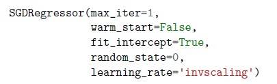
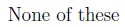
Q5MCQ2 marks
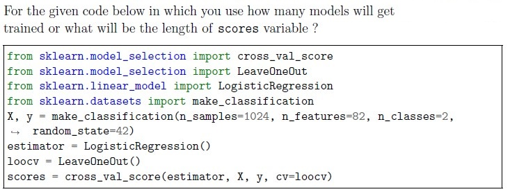
1106
82
1024
5
None of these
Q6MCQ2 marks
What is the purpose of k-fold cross-validation ?
To split data into training and testing sets.
To tune hyperparameters.
To evaluate model performance on multiple subsets.
To preprocess data.
Q7MCQ2 marks
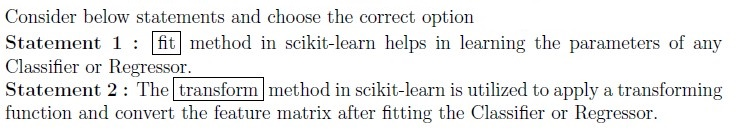
Statement 1 is True and Statement 2 is False
Statement 2 is True and Statement 1 is False
Both the statements are True
Both the statements are False
Q8MCQ2 marks
Which assumption does Naive Bayes make about the features?
They are independent of each other.
They are always a numerical representation of the text data.
They are linearly related.
They are categorical.
None of these.
Q9MCQ3 marks
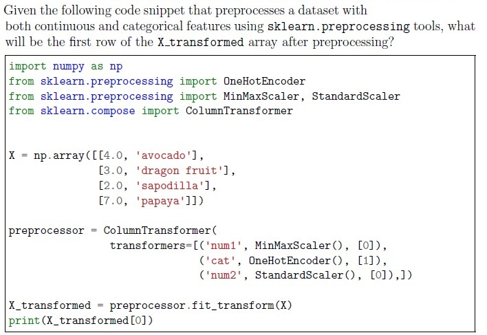
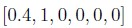
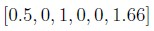
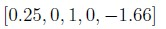
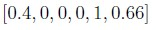
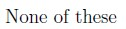
Q10MCQ3 marks
You’re working on a dataset containing customer purchase data, and you want to segment the customers into distinct groups based on their purchasing behavior. Each data point represents a customer and includes features like “Total Amount Spent” and “Number of Items Purchased.” Which algorithm is suitable for this scenario?
Linear Regression
Decision Tree
K-means Clustering
Support Vector Machine
None of these
Q11MCQ3 marks
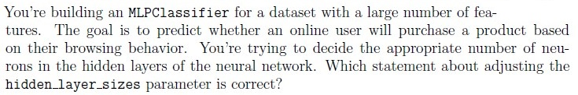
Increasing the number of neurons in hidden layers will always lead to bettermodel performance.
Decreasing the number of neurons in hidden layers reduces the model’scapacity to capture complex patterns.
The number of neurons in hidden layers does not significantly affect themodel’s performance.
Finding the optimal number of neurons is a trial-and-error process and mayrequire experimentation.
Q12MCQ3 marks
How does agglomerative clustering handle outliers?
It ignores outliers during the clustering process.
It assigns outliers to the nearest cluster.
It creates separate clusters for outliers.
It removes outliers from the dataset before clustering.
Q13MCQ3 marks
What is agglomerative clustering?
A hierarchical clustering technique that starts with each data point as itscluster and merges the closest clusters iteratively.
A method for partitioning data into a predefined number of clusters.
A clustering algorithm that uses centroids to iteratively assign data points toclusters.
A dimensionality reduction technique that projects data onto a lower-dimensional space.
Q14MCQ3 marks
What initialization method is best in KMeans to select initial cluster centroids?
Random initialization
K-means++ initialization
Hierarchical agglomerative initialization
Weighted initialization
Q15MCQ3 marks
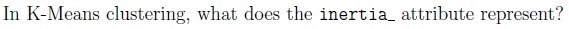
The distance between cluster centroids
The number of clusters formed
Sum of squared distances of samples to their closest cluster center.
The silhouette coefficient
Q16MCQ4 marks
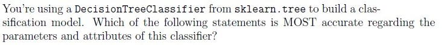
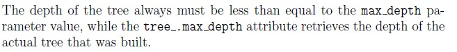
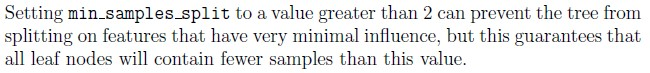
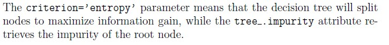
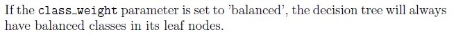
Q17MCQ4 marks
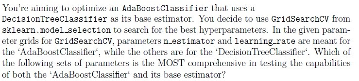
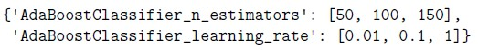
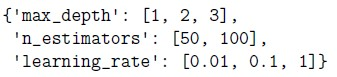
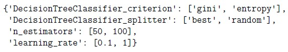
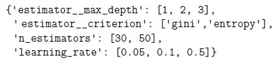
Q18MCQ4 marks
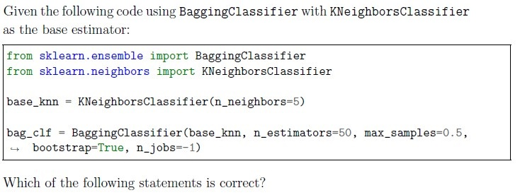
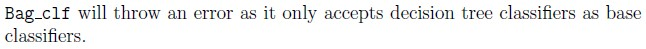
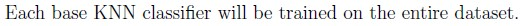
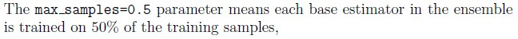
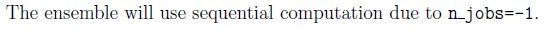
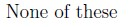
Q19MCQ4 marks
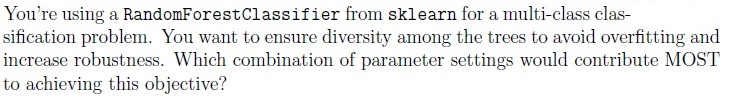
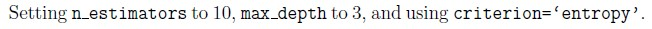
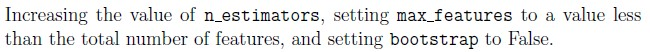
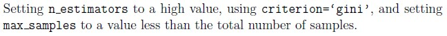
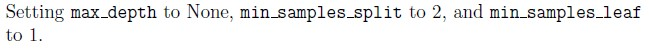
Q20MSQ2 marksselect all that apply
What is the solution for overfitting?
To have less constraints/regularization
To have more constraints/regularization
Delete a significant portion of data
Increase the dataset size.
None of these.
Q21MSQ2 marksselect all that apply
Select all the correct options:
The more the SGD iterations, the lesser the fluctuations in training error.
More iterations require more computation time.
The tol (error tolerance) parameter restricts the number of iterationsperformed.
Training error might not consistently decrease while performing SGDiterations.
None of these
Q22MSQ2 marksselect all that apply
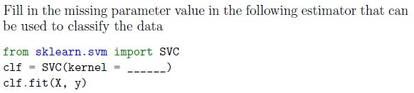
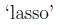
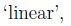
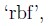
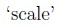
Q23MSQ2 marksselect all that apply
Which of the following statements are true?
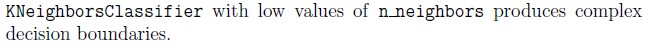
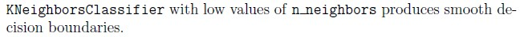
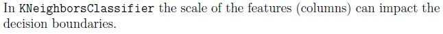
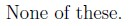
Q24MSQ2 marksselect all that apply
Which of the following options are correct regarding regularization?
It is a technique used to minimize the adjusted loss function and avoidunderfitting.
It helps in increasing the bias of the training model.
It determines the rows to be selected as a training dataset.
Elastic net regularization is a combination of L1 and L2 regularization both.
Q25MSQ3 marksselect all that apply
Which of the following techniques are used in decision trees to make decisions or to measure the quality of a split while training the model?
Entropy
RoC Curve
Cross Entropy
Gini Impurity
Q26MSQ3 marksselect all that apply
Which of the following approaches is(are) helpful to find a good value for k in k−means clustering algorithm?
Plotting an Elbow curve.
Using classifiers before making clusters.
Plotting Silhouette coefficient for various values of k.
Using k-fold cross validation
Q27MSQ4 marksselect all that apply
10 number of samples at node N. If it is split, it can split such that 2 samples inthe left child and 8 samples in the right child.
6 number of samples at node N. If it is split, it can split such that 3 samples inthe left child and 3 samples in the right child.
12 number of samples at node N. If it is split, it can split such that 5 samples inthe left child and 7 samples in the right child.
4 number of samples at node N. If it is split, it can split such that 3 samples inthe left child and 1 samples in the right child.
Q28SA2 marksQ29SA2 marksQ30SA2 marksQ31SA2 marksQ32SA2 marksQ33SA3 marksQ34SA3 marksQ35SA3 marks
Comprehension passage - the questions below it refer to this
Based on the above data, answer the given subquestions.
Q36MSQ2 marksselect all that applyQ37SA2 marksQ38SA2 marksQ39SA2 marksQ40MCQ2 marks
The number of rows will decrease in the dataset.
The number of columns will decrease in the dataset.
The number of columns and number of rows, both, will decrease in thedataset.
Auto-generated summary from the source site. Handy as a checklist; the lessons above explain each idea from scratch.
Here’s a structured summary of core topics, concepts, principles, and equations essential for the Diploma Level: Machine Learning Practices (Computer-Based Exam). The summary is organized by themes (e.g., Supervised Learning, Unsupervised Learning, Model Evaluation, etc.), followed by a knowledge graph in Mermaid syntax to visualize relationships.
1. Core Topics & Concepts
A. Supervised Learning
1. Classification
Algorithms:
Logistic Regression: Binary/multi-class classification using sigmoid/log-softmax.